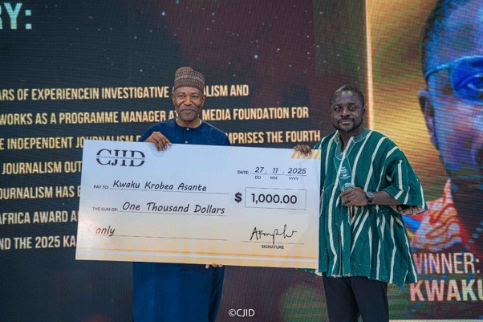

CJID announces shortlist for 2026 Excellence in Journalism Awards

The Centre for Journalism Innovation and Development (CJID) has announced the finalists for its 2026 annual journalism awards, recognising reporting from across West Africa. The awards received 424 entries from 277 journalists in nine countries: Ghana, Nigeria, Senegal, The Gambia, Sierra Leone, Côte d’Ivoire, Liberia, Guinea and Benin. The total was 54.2 per cent higher than the 275 entries received for the 2025 edition.
Entries were screened to identify the top five in each of eight categories, then assessed by an independent regional jury. Judges considered accuracy, fairness, originality and innovation, research depth, writing quality, public significance and ethical standards before selecting the finalists. The categories are health reporting, community reporting, human rights reporting, social accountability, climate change reporting, solutions journalism, fact-checking, and sexual and gender-based violence reporting.
The jury was chaired by Hannah Ajakaiye, founding editor of FactsMatter NG. Its members were Maxime Domegni, Ajibola Amzat, Kent Mensah, Manasseh Awuni and Amaka Okoye. Ajakaiye said the entries were particularly strong in social accountability, environmental reporting and human rights. She also noted progress in solutions journalism, while identifying fact-checking and coverage of sexual and gender-based violence as areas for improvement.
The jury chose not to name an Editor of the Year because the limited number of submissions did not sufficiently meet the award’s criteria. Finalists will be recognised at a ceremony on Wednesday, November 25, 2026, at the Abuja Continental Hotel, held as part of the Media and Development Conference. Winners and runners-up in each category will be announced there.
CJID CEO Dapo Olorunyomi congratulated the finalists and thanked all entrants and the independent jury, describing the recognised work as reflecting journalism’s public-service role across the region. The 2026 awards are supported by the Royal Norwegian Embassy in Abuja and the Ministry of Foreign Affairs of the Kingdom of the Netherlands.
Source: Premium Times